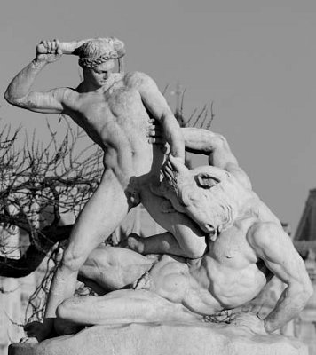

Antikçağda yaşayan Atinalı kahramanların en ünlüsü Teseus (Theseus), çocukluğunda hiç göremediği kral Aygeus'un (Aigeus) oğluydu... Babasını görememesinin nedeni de, anasının Atina dışında yaşıyor olmasından kaynaklanıyordu... Babası kral Aygeus, Teseus'un anasının yanına son gelişinde; "Yakında bir çocuğumuz olacak, biliyorsun. Oğlan olursa, büyüdüğünde şu kayanın altına koyduğum kılıcı alıp kuşansın; kılıcın yanındaki ayakkabıları da giysin. Sonra da Atina'ya gelip beni bulsun!" dedi ve bir daha dönmemek üzere kentten ayrıldı...
Bir süre sonra doğan bebeğine Teseus adını verdi anası.... Geçen yıllar içinde de çocuk babasını ne gördü, ne de adını duydu... Çiçeği burnunda delikanlı olduğunda da bir gün anası onu o söz konusu kayanın yanına götürdü ve babasının ayrılırken söylediklerini yineledi ona... Haliyle babasının isteği uyarınca hiç zorlanmadan kayayı kaldırdı Teseus. Kayanın altındaki kılıcı alıp kuşandı; ayakkabıları da ayaklarına geçirdi... Artık Atina'ya babasının yanına gitmek için, anasının hazırlattığı gemiye binmeye geldi sıra... Ne var ki gemiye binmeyeceğini söyledi Teseus... Çünkü ün kazanmak istiyordu o... Tıpkı dillere destan Baştanrı Zeus'un oğlu Herakles gibi. Zaten anası onun öykülerini anlata anlata büyütmüştü onu. Gemi yolculuğu yaparsa, içinden geçen serüvenleri yaşayamayacağını düşünüyordu haklı olarak... Tek başına yollara düşmek, önüne çıkan engelleri, tehlikeleri aşa aşa ulaşmak istiyordu babasına... Herakles olabilmenin başka yolu yordamı yoktu!.. O yüzden tek başına çıktı yolculuğa...
O sıralarda bütün Yunanistan'ın korkulu düşü üç hırsız vardı. Onlardan Skiron adlı olanı, yakaladığı yolcuyu soyduktan sonra önce ayaklarını yıkatır, sonra da bir tekme atıp onu uçuruma savururdu! Sinis adlı hırsız da kurbanını soyup soğana çevirdikten sonra iki çam ağacını kırmadan yere eğer; zavallının bir ayağını bir ağaca, ötekini de öbür ağaca bağlar, sonra da ağaçları koyuverirdi! Birden doğrulan ağaçlar yolcuyu iki parçaya bölüverirdi!.. Üçüncü soyguncunun yöntemi daha başkaydı. Kurbanını demirden bir yatağa yatırır; yatağa sığmazsa fazla yerlerini keser, budardı... Zaten bu işe başladığından beri yatağa tam denk gelen bir yolcuya rastlamamıştı hiç! Teseus bu ünlü hırsızları yolu üstünde birer birer temizledi... Onları kendi uyguladıkları yöntemlerle cezalandırdı... Bu kahramanlığı kısa sürede bütün Yunanistan'da duyulup dillere destan oldu...
Atina'ya vardığında da onu karşılayan halk, meydanlara zor sığdı! Kral Aygeus da hiç tanımadığını sandığı bu kahraman onuruna görkemli bir hoş geldin şöleni düzenledi sarayda. Yanında sevgilisi büyücü Medeya (Medeia) da vardı. Medeya, onuruna şölenler düzenlenen Teseus adlı bu kahramanın gerçekten kralın oğlu olduğunu çözmüştü büyü yoluyla. Ne var ki sevgilisi kral Aygeus, bu delikanlının kendi oğlu olduğunu öğrenip onu saraya alırsa, bunun kendisi için hiç de iyi olmayacağını düşündü. Çünkü kralla aralarını bozabilirdi. O yüzden de; "Bu delikanlı ününe güvenerek seni öldürecek ve tahtına kurulacak. Onu tez elden yok etmeye bak!" diye kral Aygeus'u kışkırtmaya başladı hemen!..
Medeya'dan duyduğu bu sözler yüzünden kralın eli ayağına dolaştı! Öyle ya, taht sorunu vardı ortada! "Peki ne yapalım öyleyse?" diye sordu kral. Medeya, zehirli bir içkiyle hemen orada işi bitirmesini önerdi... Ve kral da hiç beklemeden zehirli bir içki hazırlattırıp Teseus'a gönderdi... Teseus, kendisine sunulan içki bardağını masanın üstüne koydu. Sonra da, "Artık kendimi tanıtmanın zamanı geldi," diye düşündü ve birden kılıcını kınından çıkarıp havaya kaldırdı. Herkes de ona çevirdi bakışlarını... Kral çok daha ilgiyle baktı kılıca. Ve onu daha iyi görebilmek için ilerlemeye başladı ağır ağır. Sonra ayakkabılarına baktı delikanlının... O anda da Teseus içki bardağını aldı eline! Tam ağzına götürürken yanına gelmiş olan kral; "O benim oğlummm!" diye bir çığlık attı ve bardağı hemen kaptı elinden... Sonra da kalabalığa dönüp Teseus'un kendi öz oğlu olduğunu, ölümünden sonra da tahta onun oturacağını söyledi. Olup bitenleri soluklarını tutarak izleyen kalabalık, daha sonra alkış ve yaşasın çığlıklarıyla inletti salonu. Kral, oğlunun elinden tuttu ve Medeya'nın yanına götürmek istedi... Sağı solu yokladı gözleriyle... Ama arasın da bulsundu Medeya'yı! Büyücü Medeya, uçan atların çektiği arabasına atladığı gibi Asya'ya doğru, çoktan havalanıp gitmişti...
Teseus babasının sarayına yerleştikten sonra da birçok serüvenle içli dışlı oldu. Bunlardan en çok dilden dile dolaşanı, Minotauros denen canavarla ilgili olanıydı... Zaten Minotauros, "Minos'un boğası" anlamına geliyordu... Girit kralı Minos'un karısı Pasifae (Pasiphae), saraydaki tanrı Poseydon'un armağanı beyaz bir boğaya âşık olmuş, onunla çiftleşmişti!.. İşte bu çiftleşmeden Minotauros denen bu canavar dünyaya gelmişti. Girit kralı Minos da, ele avuca sığmayan ve doymak nedir bilmeyen bu canavarı bir Labirintos'a (Labyrinthos) kapattırmıştı... Üstelik bu canavara yem olmak üzere her yıl belli bir sayıda genç kız ve genç erkek sunmak gerekiyordu. Kral Minos'un söylediğine göre bu bir tanrı buyruğuydu. Bu yüzden Girit kralı Minos da, bir süre önce giriştiği bir savaşta yenilgiye uğrattığı Atina krallığını, Minotauros'a yem olmak üzere, her yıl on genç kız ve on delikanlı göndermek zorunda bırakmıştı...

Teseus ve canavar Minotauros
İşte her yıl göndermek zorunda kaldığı böylesi bir fidye zorunluluğundan bıkıp usanan Atina kralı, oğlu Teseus'u bu canavarı öldürmek üzere gizlice Girit'e gönderdi. Teseus, bir yolunu bulup kral Minos'un güzel kızı prenses Aryadne'yi ayarttı ilkin: Onu kendine âşık etti. Onun yardımıyla da Minotauros'u öldürdü; bu başarısıyla da büyük bir ün kazandı Teseus...
Amacına ulaşan Teseus işini bitirip Atina'ya dönerken, evleneceğim diye söz verip gemisine aldığı güzel Aryadne'yi, kimsesiz Naksos adasında uyutup pupayelken deniz ötelerine kaçıverdi!.. Ama gözyaşları içinde güzel Aryadne'yle karşılaşan tanrı Diyonisos da, onu rengârenk gelin giysileri içinde, Ege'nin adsız bir adasına alıp götürdü...[2]
Teseus, babası kral Aygeus'un ölümünden sonra da onun tahtına kuruldu...